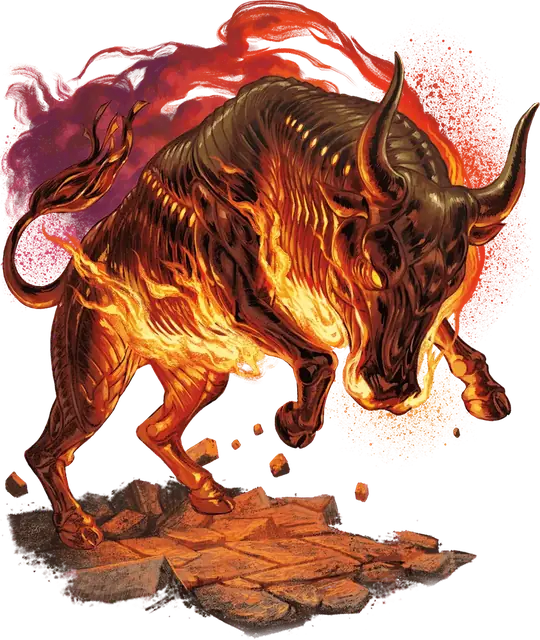

Бронзовая горгона
Brazen Gorgon
Большой Конструкт, без мировоззрения

Класс Защиты 19 Инициатива +2 (12)
Хиты 161 (17к10 + 68)
Скорость 40 футов
| мод | спас | ||
|---|---|---|---|
| СИЛ | 18 | +4 | +4 |
| ЛОВ | 14 | +2 | +2 |
| ТЕЛ | 19 | +4 | +4 |
| мод | спас | ||
|---|---|---|---|
| ИНТ | 2 | −4 | −4 |
| МДР | 14 | +2 | +2 |
| ХАР | 7 | −2 | −2 |
Иммунитеты Огонь; Истощение, Окаменевший
Чувства Тёмное зрение 60 футов, пассивное Восприятие 20
Языки нет
Опасность 9 (5 000 опыта; БВ +4)
Особенности
Пылающая аура. В конце каждого хода горгоны все существа в 5-футовой Эманации, исходящей от горгоны, получают 13 (3к8) урона Огнём.
Свечение. Горгона испускает Яркий свет в радиусе 10 футов и Тусклый свет ещё на 10 футов.
Действия
Мультиатака. Горгона совершает две атаки Боданием.
Бодание. Бросок рукопашной атаки: +8, досягаемость 5 фт. Попадание: 11 (2к6 + 4) Колющего урона плюс 10 (3к6) урона Огнём.
Расплавляющий рывок (Перезарядка 5–6). Горгона перемещается на расстояние вплоть до значения своей Скорости, не Провоцируя атак, и может перемещаться сквозь пространство существ Среднего размера или меньше. Каждый раз, когда горгона входит в пространство существа в первый раз во время этого хода, цель подвергается воздействию следующего эффекта. Спасбросок Ловкости: Сл 16. Провал: 13 (2к8 + 4) Колющего урона плюс 13 (3к8) урона Огнём, и цель втягивается в пространство горгоны и становится Схвачена (Сл высвобождения 14). Если другое существо уже Схвачено горгоной, цель становится Опрокинутой. Пока длится захват, цель Опутана. Когда горгона перемещается, Схваченная цель перемещается вместе с ней без траты дополнительных футов.
Бонус мастерства +4
Среда обитания Леса, Луга, Холмы
Сокровища Любые
Горгоны
Быкоподобные стражи с окаменяющим дыханием
Горгоны — правдоподобно выполненные автоматы, похожие на закованных в железную броню быков и готовые уничтожить любого нарушителя на их территории. В дополнение к своим смертоносным рогами и железным копытам они могут испускать клубы ядовитого газа.
Маги используют горгон в качестве стражей. Процесс их изготовления труден и опасен: для создания одного экземпляра требуется скелет быка, кровь медузы и мозг василиска, которые нужно заключить в оболочку из зачарованного железа. Если что-то пойдёт не так, компоненты начнут выделять опасный магический окаменяющий газ, который может быстро заполнить помещение и остаться там на много лет.
Как правило, при создании горгон маги накладывают на них чары, заставляющие игнорировать любое существо с особым ключом управления, таким как пароль или специальный сигнал.
Охраняющее область чудовище будет нападать на нарушителей, пока те не убегут либо не будут уничтожены. Но если кто-то из них воспользуется ключом управления, горгона будет игнорировать этого незваного гостя, пока тот находится в поле её зрения. Однако, если злоумышленник скроется из виду, а затем вернётся и не воспользуется ключом управления, чудовище нападёт на него. Пробравшиеся на территорию горгоны существа должны быть бдительны и знать её точное местоположение, иначе рискуют нарваться на чудовище, которое, по их мнению, больше не представляет угрозы.
Создатели горгон стараются использовать намерено сложные ключи управления. Подсказки к ним можно найти среди записей творца или в области, которую защищает чудовище; а возможно, это последняя запись, что успел нацарапать окаменевший нарушитель. Совершите бросок по таблице «Ключ управления горгоной» для вдохновения или выберите сами слово или сигнал, который временно нейтрализует горгону.
Ключ управления горгоной
| 1к6 | Горгона не будет атаковать тех, кто... |
| 1 | Сотворит особое заклинание в её присутствии. |
| 2 | Повернётся к ней спиной или иным образом будет делать вид, что не замечает чудовище. |
| 3 | Предложит её испить крови, вина или воды. |
| 4 | Процитирует определённый стих или споёт нужную песню. |
| 5 | Произнесёт имя её создателя наоборот. |
| 6 | Носит маску быка или другого животного, имевшего значение для её создателя. |
Последователи изгнанного архидьявола Молоха изменили процесс создания горгон, чтобы сделать своих собственных дьявольских стражей — бронзовых горгон. Эти чудовища — похожие на быков пустотелые автоматы, чьи металлические оболочки светятся от нестерпимого жара.
Когда они бросаются на врагов, рёбра их каркасов раскрываются подобно дверцам клетки, и горгоны заключают противников внутри себя, сжигая их внутренним жаром. Как правило, бронзовых горгон можно обнаружить в местах, осквернённых культом Молоха, другими архидьяволами или кровожадными богами.